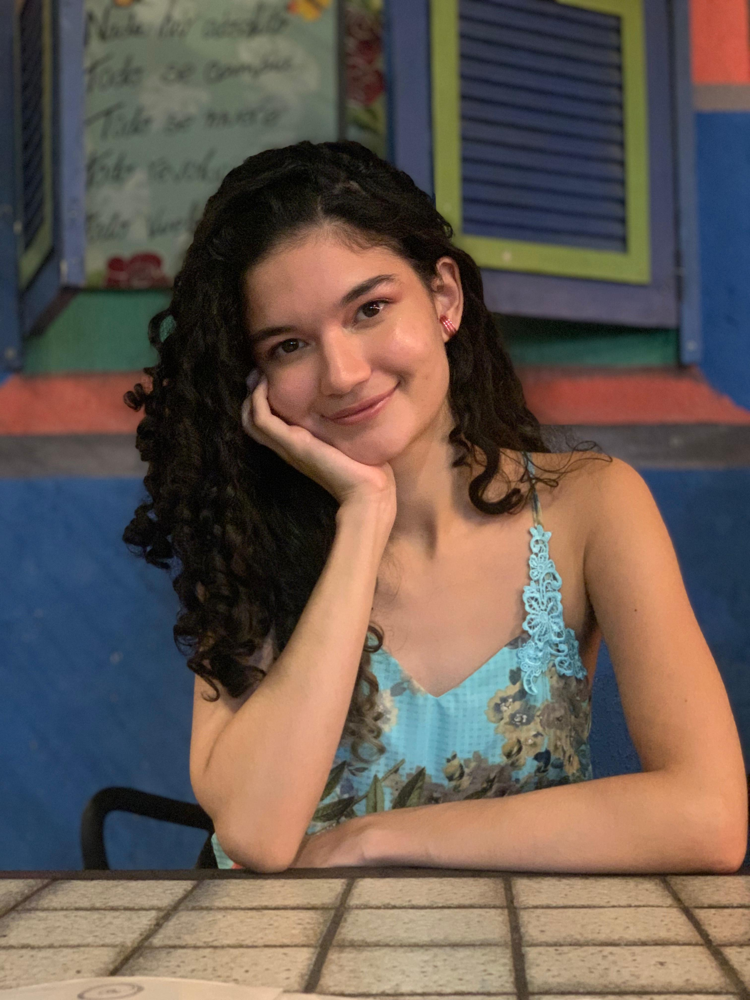

I am a PhD student under the supervision of Nicolas Trotignon, at the ENS de Lyon, in the MC2 team, with a thesis about the characterization of (theta, triangle)-free graphs. I have a bachelor's degree in Mathematics and a master's degree in Computer Science, both from Universidade Federal do Ceará (UFC). From 2018 to 2024 I was a member of the ParGO research group. During my master's degree, I worked on the Harmonious Coloring problem under the supervision of Júlio Araújo and Marcio Santos.
You might also check my entries at: zbMATH and arXiv.
Research interests: Structural Graph Theory, Graph Coloring.
Contact: beatriz.martins [at] ens-lyon.fr
Address: Laboratoire de l'Informatique du Parallélisme. École Normale Supérieure de Lyon. 46 Allée d'Italie. 69364 Lyon Cedex 7. France.
Research
Preprints
- Martins, B., Trotignon, N. (2026). (Even hole, triangle)-free graphs revisited. arXiv preprint arXiv:2604.01816. ArXiv.
- Dvořák, Z., Martins, B., Thomassé, S., & Trotignon, N. (2025). Lollipops, dense cycles and chords. arXiv preprint arXiv:2502.04726. ArXiv.
- Bensmail, J., Martins, B., Tang, C. (2025). 1-2 Conjectures for Graphs with Low Degeneracy Properties. arXiv preprint arXiv:2504.21452. ArXiv.
Conferences
- Araújo, J. C., Martins, A. B. D. S., & Santos, M. C. (2022). Coloraçao Harmoniosa. In Encontro de Teoria da Computação (ETC) (pp. 121-124). SBC. DOI.
Talks
-
(Even hole, triangle)-free graphs revisited. Slides.
- 37th International Workshop on Combinatorial Algorithms (06/26, Clermont-Ferrand, to occurr)
- Graphes@Lyon Seminar (03/26, LIRIS)
- Algorithms and Complexity Seminar (03/26, Leeds)
-
Lollipops, dense cycles and chords. Slides.
- 27e Journées Graphes et Algorithmes (11/25, Paris)
-
Formulações para o problema de coloração harmoniosa. Slides.
- 42o Congresso da Sociedade Brasileira de Computação - VII Encontro de Teoria da Computação (08/22, Niterói, UFF)
Teaching
2025
- Fundamentals in Computer Science (8h TD)